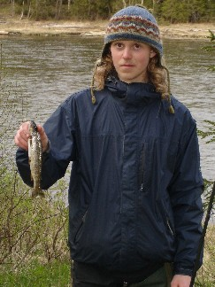

Summer, summer, rain. Summer. Weather changes fast.
Caught fish!

Hey everyone! Thank you! For any support inspiration, encouragement,
reassuring, donating, or anything else you have given me.
That is what this site is, a way to say 'tack' and to somehow give back.
Fishing
Day trip to Tännforsen
Writing
Östersund
in Winter
Inspired by Rosa's cool page (check it out through my Dad's page!) I am
adding a little something for now...
Ice
fishing
If you are interested in the big lake animal (monster)
Storsjödjuret
If you don't know where Östersund, or even Sweden, is,
go to the more introductory/informative start-site
The site
And now, some pictures that I took!
Berry Picking on the first
saturday, my second day.
Hunting for moose.
A day around town.
Sometime, all this will find
a pattern and be organized.
At home in Sweden.
April 9, 6C windy snow maybe little rain also. Slush.
April 2, halve meter snow and sunny, 0 c
It was as deep a winter as I have ever experienced in a city, with
three four inches of snow and the road nothing but ice, but suddenly
there is
no snow, it is really warm (10-11 celcius, you don't need a hat or
gloves. Nice weather.)
Weather update 25 November. 1 to -1 celcius, two inches of snow, roads
are ice. Cloudy. Sunrise at 8.45, sunset at 14.50
February! -5 to -10 celcius, sunny mostly, bright outside. Cold, but
the sun warms.
I am writing this from my own html, learned or helped remember from
what I have seen of it in Dad's page. And that means that everything
goes wrong. I just had a problem with that arctura thing because I was
missing a quotation mark.
I am trying to keep all the pictures easily loadable and things like
that. If you have some questions or suggestions about anything on the
page or about my trip my
email is zippythesage@hotmail.com
My Dad's home
site.
Español